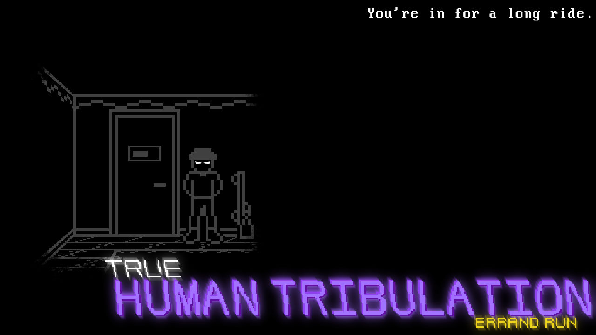
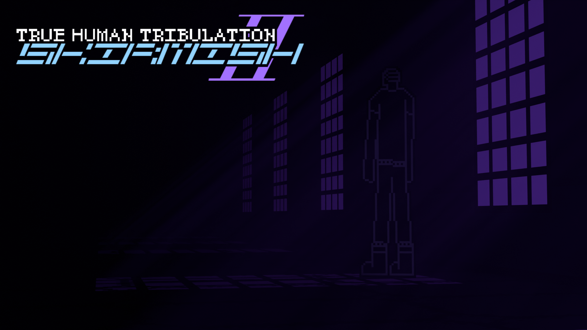
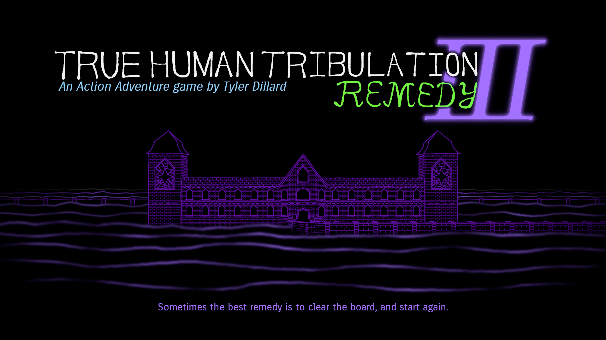

To be more specific, this page contains interactive media made for the series rather than just games. That includes visual novels, quizzes, and the like. If you can interact with it, you'll find it here.
| Name | Creator | Summary | Links | Thumbnail |
|---|---|---|---|---|
| True Human Tribulation: Errand Run | Tyler | A game where you have to complete objectives to win. |
 |
|
| True Human Tribulation II: Skirmish | Tyler | A wave-based fighter where you have to survive against multiple waves of enemies. |
 |
|
| True Human Tribulation III: Remedy | Tyler | An action adventure game that has a slight focus in resource management. |
 |